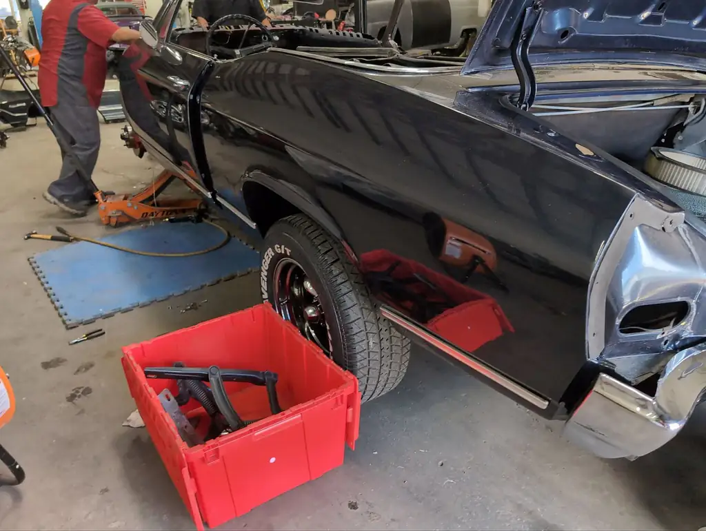

I’m here with Jose with his 1979 Pontiac Trans Am we did a complete engine rebuild we did the transmission upgraded this steering and did some air condition work thanks Jose for letting us work on your Trans Am
I’m here with Robert with his 1968 Ford Mustang. Robert just acquired this mustang not to along ago. It has been sitting for about 25 years, and he brought it to us to get him up and going, enjoy this beautiful Mustang.
I am Here with steve with his 1969 Tr-6 not every project is a restoration. Steve came in for brake upgrades coach work and some suspension work.
I’m here with Brynn. With her 1970 beetle. We Installed new heads,upgraded the ignition to electronic ,over hauled the brakes and some lite metal fabrication work.
I’m here with Miles with his 1977 Ford Bronco. He bought it restored and brought it to us to upgrade the steering and upgrading the cooling . Happy to help out and bring his Bronco to the next level.
I’m here where Collin with his 1979 elcamino this came to us from Hagerty Insurance. This car has a very special meaning to Colin. This was his late father’s elcamino. We were very happy that we were able to help Collin out and get his elcamino back on the road. And to help preserve his dad’s memory
I’m here with Lans with his 72 442.Lans has been a customer since about 2014 whenever something comes up with the car or something happens to it Lans brings the 442 back to us and we take care of it Thank you Lans😊
I am here with mike with is 1966 mustang. We re did the front suspension,new exhaust tips. Fix low oil pressure in motor.
I am here with Rob with his 1986 xjs Jaguar. He got into a minor fender-bender with his classic Jag. Rob brought it to us we dealt with the insurance company. and as you can see looks good as new.
I’m here with Adam with his 1965 Mustang.his Mustang has been sitting for 15 years. Adam brought it to us we did some wiring all new gas lines brake lines did a brake conversion tuned it up rebuild the carburetor thanks Adam for letting us work on one of my favorite Mustangs
I’m here with Bob Jenny and Dylan. With their 1967 RS Camaro. This was a complete nut and bolt rotisserie restoration. As you can see the car came out beautiful and I wanted to thank Bob Jenny and Dylan for letting us work on their 67 Camaro.
I’m here with Jeff with his 280Z Datsun brought it to us for some light mechanical work some metal work coach work freshen up the wheels thanks Jeff for letting us work on your Datsun.
I am here with Steve with his 1975 Corvette.Steve owned this Corvette for a long time and before he know it sat for years. Steve decided it was time to enjoy his Corvette again so he brought to us to make road worthy. With new bumpers and all new brakes exhaust and a bunch of light menchianca work. He can now enjoy it.
I’m here with Nick with his 1990 Mustang. Nick has a Passion and a love for these cars. He had his car at another shop he was not happy pulled it out and then brought it to us. He decided To paint it tangerine bright Orange. As you can see the car looks amazing especially with the black trim Accenting the bright tangerine Orange. Thank you Nick for let us work on your baby.
I’m here with George with his 1973 Mercedes Benz. This car was in a building that had a fire. George brought the car to us we cleaned it got All the soot off. Notice the paint had yellowed from the fire. We worked with the insurance company got everything approved and re painted his Mercedes.
This has been a long time coming for the owner of this 1967 GTO. Getting ready to Mary the chassis back to the body.
I’m here with Jim and Diane with their 1970 Chevelle SS 396. Jim has owned this car for a long time and it has been sitting for almost 30 years! This was a full restoration, which included an engine rebuild, sheet metal work, body/paint, and everything else in between. Jim and his wife Diane can now enjoy their Chevelle just as they did all those years ago! Thank you Jim and Diane for giving us the opportunity to restore your classic!
We can do anything from regular maintenance to complete restoration! Don’t hesitate to give us a call!
I am here with Rich with his 1966 Mustang.This was a complete Restoration as you can see it’s stunning.Thank you Rich
I am here with Wanda with her 1954 Chevy pick up.She brought to us for minor work new gauges,radio and some wiring issues.
I Am here with Alan with his 2001 Pontiac Grand Prix.We normally don’t restore cars this new but it was our pleasure to do it thank Alan for let us work on you baby.
I am Here with James with his 1973 mustang James Has owned this car since he was 16 it was his first car.It was sitting for a few years he brought to us help him get back on the road.Now he again enjoy it once again
I’m here with Brian and his General Lee! We did some paint work on the front end, replaced the driver side door hinges because the door was sagging, some minor rust repair, new Speedometer and cable, and realigned and set all the glass. Thanks for letting us do the job on this iconic classic!
Looking to have some work done on your classic car shoot us a message or give us a call 732-410-4540
Today I am here with Jp in Cape Coral Florida! He brought us his 1974 corvette which he just bought. The car was not running well and it’s suspension needed attention. Now he is now able to enjoy this cool corvette classic!
I am here with Ralph with his 1968 Ford Thunderbird 429. We rebuilt transmission upgraded the steering.upgraded the ignition and carburetor. Definitely a sleeper!!!
I’m here with Goody. With his 1972 Chevelle. This was a complete nut bolt restoration. Rebuilt big block with rollers. New fuel lines new interior. This Chevelle is better than new you, thank you Goody for letting us do your 72 Chevelle.
This came to us from another shop And was hit with with hurricane Sandy. We got it and did a complete restoration in big block car 427 she halls.Thank you Jamie for letting us do your you’re awesome 68 Camaro.
I’m here with Ronnie his 1977 Chevrolet C10 Bonanza.He came in for engine rebuild,Transmission Plus 4 wheel drive rebuild and suspension and steering.
I’m here with John with his 1967 Camaro. We installed modern steering & A Holley sniper fuel injection unit.
I am here with Gary in Cape Coral with his 1960 El Camino.We did a Transmission upgrade fixed all the wiring some interior work and some suspension work. Very cool car thank you Gary for letting us work on it.
I’m here with Ken. In our Cape Coral shop With his 1972 442. We did a complete front To rear suspension QA1Controll arms, Shocks & Coilovers. New Vintage Air unit and many others things.Thank you Ken for letting us work on your Gorgeous 442.
I here with Dario, with his 1963 Corvette. It had come to us with frame damage needing a completely new nose, And a bunch of other things along the way; as you can see, the car came out beautiful. Thank you, Dario, for letting us work on your Amazing iconic, rare 63 Corvette.
I’m here with Robert with his 1968 Ford Mustang. Robert just acquired this mustang not to along ago. It has been sitting for about 25 years, and he brought it to us to get him up and going, enjoy this beautiful Mustang.
I am here with Ralph with his 1968 Ford Thunderbird 429. We rebuilt transmission upgraded the steering.upgraded the ignition and carburetor. Definitely a sleeper!!!
This came to us from another shop And was hit with with hurricane San
I am here with Paul with is 1972 98 olds.Paul owend this car since new super clean.We did some A/C paint work and some coolant issue’s.Thank you Paul for letting us work on your 98.
I am here with Andre with his 1972 Chevelle.We installed a New crate motor #Big Block and TH400 transmission.Upraded the head lights.New body mounts. New rear with coil over shocks. New front suspension and steering upgrade.Thank you Andre for letting us work on your Chevelle….
I am Here with James with his 1973 mustang James Has owned this car since he was 16 it was his first car.It was sitting for a few years he brought to us help him get back on the road.Now he again enjoy it once again.
This 63 iconic Split window high horsepower Corvette. Is finally being married back with the chassis very exciting stuff @ Tri-state classic car restorations .


I am here with Brendan with his 1988 300zx turbo.This came to us from hagerty insurance like many do. We got him All fix up and ready to go.
I’m here with Bob and Cheryl with their 1985 Camaro. They brought it to us with some typical rocker/lower quarter rust. We cut out the rust, made a couple of patch panels and spotted in the rockers for a great long lasting repair! No job is too big or too small for us here at Tri-State! Thanks again for giving us the opportunity to do the job!
I’m here with Oscar with his 1966 Ford Mustang. Oscar brought his car to us to do Interior work, Transmission work, Rebuild his carburetor and a bunch of other little things. As you can say this is a beautiful 66 Mustang and now Oscar can enjoy it.
I am Here with rob with his 2005 ford mustang.We normally don’t work on cars this new.Rob had visited a.bunch of shops trying to get is car done but no luck. He brought to us and we took care of it for him.
I’m here with Aaron and his 1964 Pontiac GTO, unfortunately Aaron had a minor accident in the rear of the car and decided to take it to us at our Cape Coral location. After we made the repair Aaron decided to go ahead and paint the entire car and the final results came out stunning! Thanks Aaron for giving us the opportunity to do the job!
Marty brought his 1967 Chevrolet Camaro here to get a change of color and fix some of the issues he had with the body. Well the car came out BEAUTIFUL! Check out his album of the build and watch the video! Thanks Again Marty!
Rafal Nowak brought us his badass 1970 Chevrolet Monte Carlo. The car wasnt running right when we got it, but after we finished a full tune up, she started up and sounded like a beast!! Hope Rafal enjoys his car for years to come!!!!!
This customer brought us a 2003 Ford Van for some minor repair work. We took care of his van in a timely matter and the customer was very happy with the outcome. Thanks again and enjoy!
Lamber Belandres brought us his awesome Alfa Romeo. We did a fine restoration on this classic and he was stoked with the outcome. We’d like to thank him again for the opportunity to work on his beautiful italian classic.
Ed brought us in his 1979 Corvette that needed suspension and brake work. We went to work and had his trailing arms and brakes replaced. Car performed much better and Ed was super happy. Thanks Ed and enjoy!
Jacob brought us his 65′ Impala coming from New York. We upgraded his brakes, suspension and his sound system. Along with that, we replaced his old transmission with a three speed Turbo 350 with a shift kit and beefed up the sound of the car with longtube headers. Another happy customer with a beautiful classic car!
Here we have David who owns this classic 1965 Plymouth Fury Convertible. We did a complete turn around on this car. Motor was fully rebuilt with a mild cam along with a tranmission rebuild with shift kit. We upgraded to an MSD ignition for a cleaner and more powerful burn. The brakes and suspension were fully upgraded and we upgraded David’s headunit to a DVD playing unit with quality sound.
Mike G brought us his stunning 1966 Mustang GT-350. We did some suspension upgrades for him and actually did a front brake disc conversion! With the new suspension and brakes the car is all ready for this upcoming season. Enjoy Mike!
Here we have a 1963 Thunderbird, this car was actually purchased from us and the customer decided to have lots of work done to bring this classic back to its glory! This included a a Motor and Transmission rebuild, All new suspension components, body work and lastly laying down that beautiful red shine! This car came out great and we are glad that Joe (the owner) is extremely happy with his Thunderbird!
Here we have a 67 Camaro that a customer brought to us. We got on it right away and did an awesome clean up job along with changing the color to that beautiful blue! The customer was left speechless and we are excited to see him so pleased with the outcome!
Steve brought us his 1969 GTO that he has owned since he was 17 and it has been in the family since it was BRAND NEW! He had some problems with some body/paint so we brought this classic in and took care of it for him. Steve is really stoked on the outcome and he will be bringing it back in the spring to get some more work done on this beautiful classic!
Mike had his Chevelle at another shop and ended up pulling the car and bringing it to us over at Tristate. We got right on the car, completing the metal work, body work, laying a gorgeous paint job down, getting the car running properly, installing new headers, a little bit of interior work and lastly throwing on his wheel’s he brought when he picked up the finished car! Mike was extremely happy with the outcome of his badass chevelle!
Here we have 73′ Cuda that is a beauty. It originally came in for a shaker hood install, rear louver panel, a rear spoiler, an upgraded carburetor and installing a trans cooler and new A/C lines. As we made progress we brought to attention to the owner some small blemishes that he wanted to take care of. We finished up the car and he was very excited with the outcome! Enjoy!
Here we have an 81′ Corvette that was brought to us for strictly body/paint and it definitely needed some love. We got to work, got the car stripped down and started the body work. After loads of adjustments and work, we layed this beautiful black color on this Vette’ and finsihed the assembly. The owner was very,very pleased with the outcome. This car transformed!
This 68 Firebird came to us needing some love and we took care of it. We replaced the carpet, pulled the transmission out and freshened it up with all new seals, did some big time maintenence on the power steering with a new pump and lines, fixed the gas door, put a new front bumper on, replaced the brake booster and serviced the brakes and lastly fixed the dash pad and the center console. The customer was extremely happy with the work and were glad to get him his car back right in time for the 4th of July Weekend!
Uzi brought us his 66 C10 in need of some love. We did a complete overhaul on Uzi’s truck and we are stoked that he loves it! With the engine bay all re-done and chromed, the refinished wheels and all the little details throughout this truck, this thing is a defininte eye catcher. Thank you Uzi for letting us get this truck ready for you and enjoy it in Israel!
It’s been a long time coming with Cliff and his 40 Chevy. He went the different route and wanted to do a 3.6 V6 swap from a 2010 Camaro… Well after a lot of trial and error and changes of ECM’s we got Cliff’s Chevy all buttoned up and ready to hit the road! We hope you enjoy it Cliff, thanks again!
Here we have an 81′ Corvette that was brought to us for strictly body/paint and it definitely needed some love. We got to work, got the car stripped down and started the body work. After loads of adjustments and work, we layed this beautiful black color on this Vette’ and finsihed the assembly. The owner was very,very pleased with the outcome. This car transformed!
Here we have Mike and his 65 Bug. He brought it to us in need of some sorting out and we took care of it no problem. We got the front end sorted out, took care of some body work and got the front end painted. Along with that, we installed a cage for Mike as he will be putting a powerful motor in this Bug. Can’t wait to see it come alive Mike
